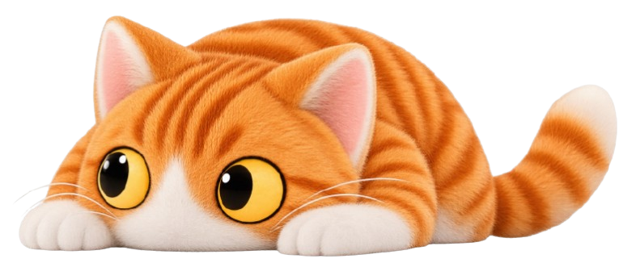
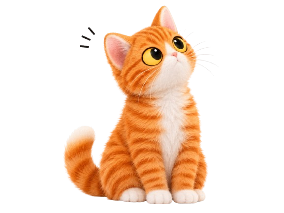

Os gatos são criaturas fascinantes, cheias de personalidade, hábitos curiosos e comportamentos que muitas vezes passam despercebidos. Por trás de cada miado, ronronado e olhar misterioso, existe um universo de descobertas!


O Gatices Curiosas nasceu para explorar esse universo e mostrar que conhecer os felinos vai muito além de simplesmente gostar deles.
Aqui, você vai encontrar curiosidades surpreendentes, informações sobre comportamento, dicas essenciais de cuidados e orientações para proporcionar uma vida mais saudável, segura e feliz ao seu companheiro de quatro patas.
Explore, descubra, aprenda e surpreenda-se com as gatices mais curiosas do mundo felino!